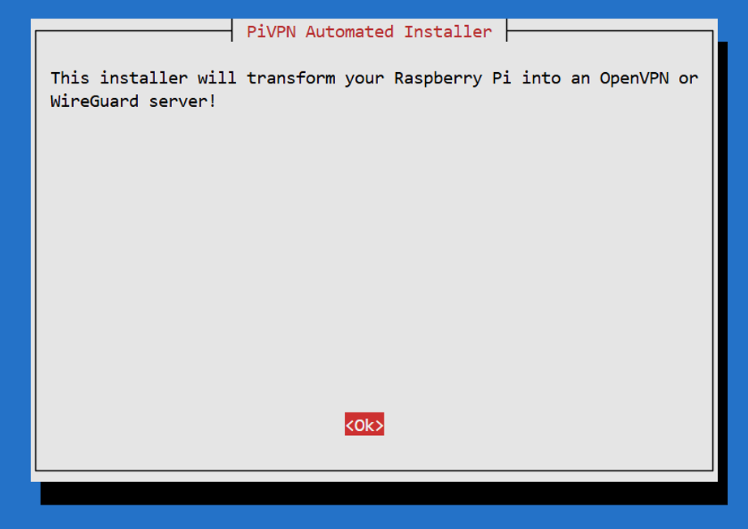

📝 概要
本レポートは、Raspberry Pi を用いて自宅VPNサーバを構築した過程を記録したものです。 単なる手順の羅列ではなく、 「どこで躓き、どうすれば効率的だったか」 という試行錯誤のプロセスを中心にまとめています。
※ セキュリティ保護のため、IPアドレスやポート番号等の詳細は伏せて記載します。
※ 実際の接続エビデンス（スクリーンショット等）は、別途提出のExcelに集約しています。
🔧 構築手順と試行錯誤の記録
1. OSインストールとヘッドレス設定
モニターやキーボードを接続せずにセットアップを行うため、OS書き込み段階（Raspberry Pi Imager）でSSHとWi-Fiの設定を事前に投入しました。
本番は有線LANで運用しますが、初期設定時は念のためWi-Fi設定も行いました。 これは、ケーブル不良などで有線接続に失敗した場合でも、Wi-Fi経由でSSH接続して救済できるようにするためです。
2. IPアドレスの固定化（ルーター側設定）
サーバとして稼働させるためにIPアドレスを固定する必要があります。 今回はRaspberry Pi側の設定ではなく、より確実な 「ルーターのDHCP固定割当機能」 を使用し、MACアドレスに対して常に同じIPが割り当てられるよう設定しました。
参考記事： Raspberry PiのIPアドレス固定は、Raspberry Pi側で設定 "しない" のが推奨らしい #RaspberryPi - Qiita
3. OpenVPNの導入
インストーラー「PiVPN」を使用し、ウィザード形式でOpenVPNを導入しました。 この時点では後述するポートの問題に気づいていなかったため、設定（ポート番号など）はとりあえずデフォルト値（UDP 1194）のままで進めました。

▲ 対話形式のインストール画面
4. 接続用ファイル（.ovpn）の生成
インストール完了後、クライアント端末が接続するための「鍵ファイル（.ovpn）」を作成します。
pivpn add
コマンドを実行してクライアント名（例：
macbook
）を入力すると、以下の場所にファイルが生成されます。
/home/pi/ovpns/macbook.ovpn
※
pi
の部分には、Raspberry Pi OS インストール時に設定したユーザー名が入ります。
このファイルには、「接続先のIPアドレス」や「ポート番号」、そして「暗号鍵」がすべて自動的に書き込まれています。 SCPコマンド等を使用して、これを手元のPCへダウンロードしました。
5. ルーター側のポートマッピング設定
OpenVPN サーバを外部ネットワークから利用するためには、 自宅ルーターで VPN 通信用ポートをRaspberry Piへ転送（ポートマッピング） する必要があります。
ルーターの管理画面にログインし、「利用可能ポート一覧」を確認したところ、私の契約環境では OpenVPN のデフォルトポートである
UDP 1194
が割当範囲外であり、使用できないことが判明しました。
インターネット接続方式（IPv4 over IPv6 等）やプロバイダの仕様により、 利用可能なグローバルポート番号が限定されている場合があります。 このため、「任意のポートを自由に開放できる」とは限らない点に注意が必要です。
そこで、ルーターの管理画面に表示されていた 割当範囲内の UDP ポート（xxxxx番） を選定し、 以下の内容でポートマッピング設定を行いました。
- プロトコル： UDP
- 外部ポート： xxxxx （ルーターの外側）
- 転送先IP： Raspberry Pi の固定IPアドレス
- 内部ポート： xxxxx （Raspberry Pi側もこのポートで待ち受け）
これにより、インターネット側から
UDP xxxxx
宛てに届いた通信が、 Raspberry Pi上の OpenVPN サーバへ転送される構成となりました。
6. クライアント設定（OpenVPN Connectへの鍵ファイル導入）
クライアント端末にアプリ（OpenVPN Connect）をインストールしておきます。
ダウンロードしておいた
.ovpn
鍵ファイルを OpenVPN Connect にインポートしますが、
この工程で設定内容の修正が必要となりました。
【起きたこと】
生成された鍵ファイルには、インストール時に指定したデフォルトのポート
1194
が記載されていました。 しかし、前項の通りルーター側では
1194
が開放できず、
xxxxx
で設定しています。
【対応】
テキストエディタで
.ovpn
ファイルを開き、ポート番号を
1194
から
xxxxx
に書き換えてからインポートしました。
【振り返り（最短ルート）】
もし、
PiVPNのインストールを行う前にルーターの空きポートを確認し、ウィザード画面でその番号（xxxxx）を入力していれば
、 生成されるファイルには最初から正しい情報が記載され、この修正作業は不要でした。
AIに言われるがままの手順ではなく、まず全体の手順や前提条件を整理したうえで作業を進める重要性を学びました。
7. 「ヘアピンNAT（NATループバック）」問題の解決
修正したファイルをインポートし、MacBookから接続スイッチをONにしましたが、最初は接続タイムアウトのエラーが発生しました。
Server poll timeout, trying next remote entry...
【原因】
自宅のWi-Fiに繋いだまま（LAN内部から）、自宅のグローバルIP（外側の住所）へアクセスしようとしたため、ルーターの仕様により通信が破棄されていました（ヘアピンNAT非対応）。
【対応】
iPhoneのテザリング機能を使用し、MacBookを
「外部ネットワーク（携帯回線）」
に接続した状態で再試行しました。 この切り分けを行った結果、無事にVPN接続が確立（CONNECTED）することを確認しました。
✅ 構築完了
以上の手順を経て、外部ネットワークから自宅へ安全に接続できる環境が整いました。 特に「ルーターのポート制限」や「NATループバック」の問題は、座学だけでは気づきにくいポイントであり、実際に手を動かしたからこそ得られた知見です。
今回の作業を通じて、AIの提示する手順をそのままなぞるのではなく、 全体の構成や前提条件を整理したうえで作業を進めることの重要性を改めて認識しました。
 製作者: kato
製作者: kato